<div data-category="Financials" data-title="GRN Purchase (with reference)" data-updated="December 01, 2025" data-contributors="RoadmapIT" data-breadcrumb="Home,Financials,GRN-Purchase (with reference)">
  <div class="page-content">
    <p>A GRN is used in the procurement process to verify and confirm the quantity and quality of goods delivered by cross-checking against a purchase order. It is sent along with the invoice, or bill.</p>
    <p>The GRN which are received will be loaded in this screen; the invoice can be created from this Screen.</p>
    <h5>Navigation path:</h5>
    <p class="fs-6">Financials \ Transactions \ Party Document \ Purchase Bills</p>
    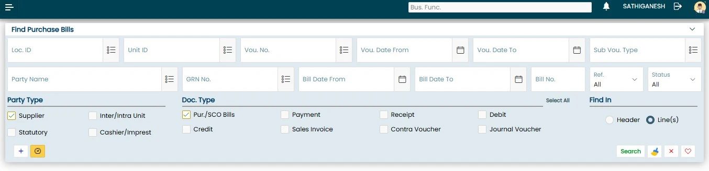
    <ul style="list-style-type: none; align-content: center">
      <li class="mouse-icon">
        Search screen displays the list of
        <strong>&nbsp;Party Documents(Purchase Bills)&nbsp;</strong>
        with the relevant details and status.
      </li>
      <li class="mouse-icon">Click on search to filter all the records.</li>
      <li class="mouse-icon">Find In – Header and Line(s) option can be selected, if Header, the details of header will be displayed or Line details will be displayed.</li>
    </ul>
    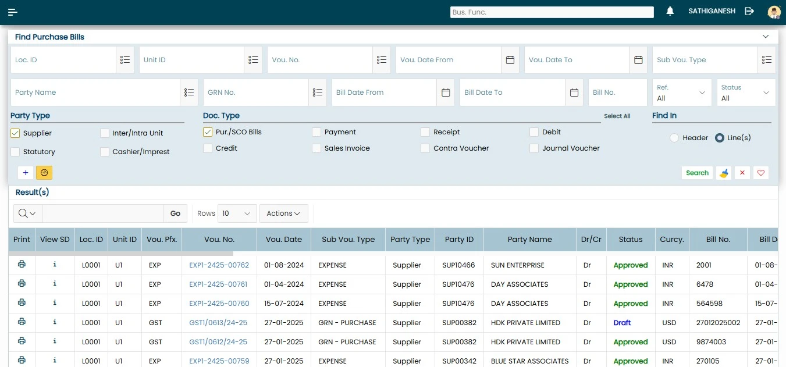
    <ul style="list-style-type: none; align-content: center">
      <li class="mouse-icon">User can filter the respective documents by entering the search parameters at the header.</li>
      <li class="mouse-icon">Using search, system displays the results relevant to the search parameters entered.</li>
      <li class="mouse-icon">On-click; the corresponding transaction record will be displayed.</li>
      <li class="mouse-icon">
        Using
        
        icon, entered search parameters can be cleared.
      </li>
      <li class="mouse-icon">
        To close the screen, use
        <i class="bi bi-x fs-4 mx-2 text-danger"></i>
        icon.
      </li>
      <li class="mouse-icon">
        By Clicking the
        <i class="bi bi-plus fs-4 mx-2 text-primary"></i>
        Add button we can create new document.
      </li>
      <li class="mouse-icon">By Clicking Pending Bills button, we can create the party document from pending GRN, Pending SCO, Pending PO, Pending ST and Pending LC.</li>
    </ul>
    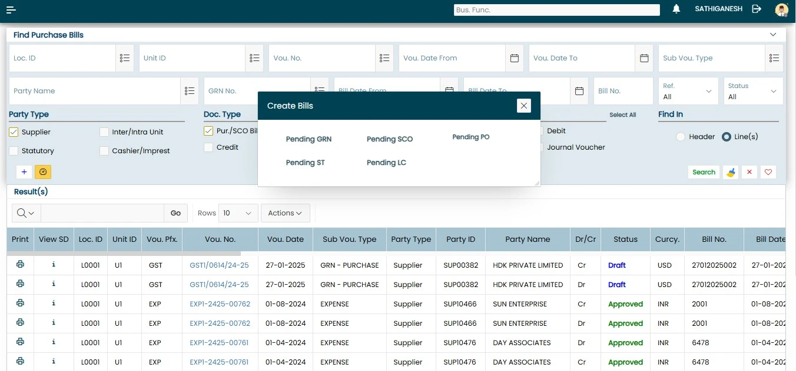
    <ul style="list-style-type: none; align-content: center">
      <li class="mouse-icon">Click on Pending GRN button.</li>
    </ul>
    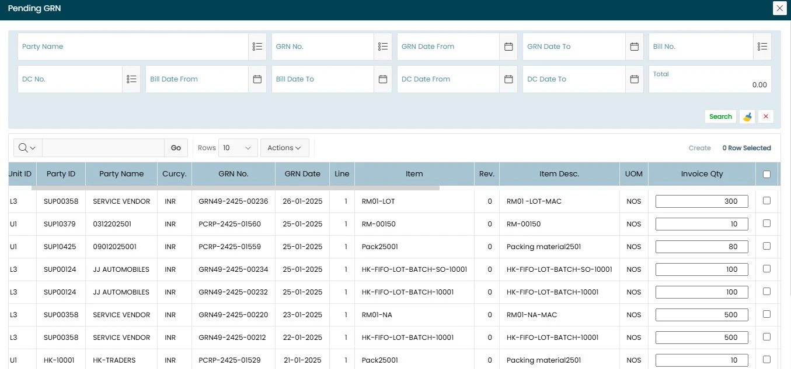
    <ul style="list-style-type: none; align-content: center">
      <li class="mouse-icon">search the Record by using the GRN No. and Records based on date.</li>
      <li class="mouse-icon">Select the checkbox and click Create.</li>
    </ul>
    <ul style="list-style-type: none; align-content: center">
      <li class="arrow-icon">After completion of the Invoice Creation, we get the following updates:</li>
      <ol class="ms-md-4 ms-2 mt-2">
        <li class="ps-0" style="display: list-item; list-style-type: circle">To be Invoice Quantity</li>
        <li class="ps-0" style="display: list-item; list-style-type: circle">Invoiced Quantity</li>
        <li class="ps-0" style="display: list-item; list-style-type: circle">In process Quantity</li>
      </ol>
    </ul>
    <h2>Updation:</h2>
    <p>While Invoice registration, Updates to the Details screen is explained as follows</p>
    <div class="row">
      <div style="width: 40px">
        <h6>E.g.:</h6>
      </div>
      <div class="col-11">
        <p class="m-0">Total GRN: 10 Qty.</p>
        <p class="m-0">Partial Invoice: 9 Qty selected in the details tab and the Invoice is created.</p>
        <p class="m-0">Initially, before invoice registration.</p>
        <p class="m-0">10 Qty will be in to be Invoice Qty.</p>
        <p class="m-0">0 will be in In progress Qty and 0 in Invoiced Qty.</p>
        <p class="m-0">After the invoice creation for 9 Qty.</p>
        <h3 class="mt-2 mb-1 pb-1">updation:</h3>
        <ol class="mt-1">
          <li class="ps-0" style="display: list-item; list-style-type: decimal">9 qty will be increased in In-progress qty</li>
          <li class="ps-0" style="display: list-item; list-style-type: decimal">1 qty will be in To be invoice qty</li>
          <li class="ps-0" style="display: list-item; list-style-type: decimal">0 in Invoiced qty</li>
        </ol>
      </div>
      <div class="col-12 mb-4">
        <p class="m-0">After Invoice; Document gets approved.</p>
        <p class="m-0">In-Progress qty will be reduced and the quantity will be increased in invoiced qty.</p>
        <p class="m-0">In-progress qty will be 0.</p>
        <p class="m-0">Invoiced qty will be 9.</p>
      </div>
    </div>
    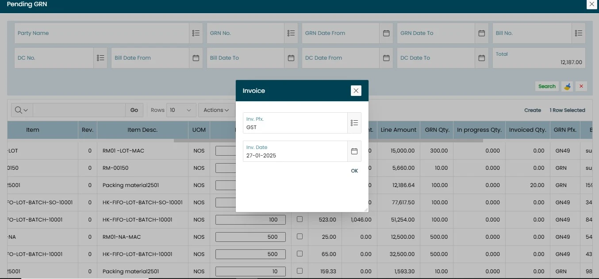
    <ul style="list-style-type: none; align-content: center">
      <li class="mouse-icon">Select the Inv.Pfx and Inv Date.</li>
      <li class="mouse-icon">Click Ok.</li>
    </ul>
    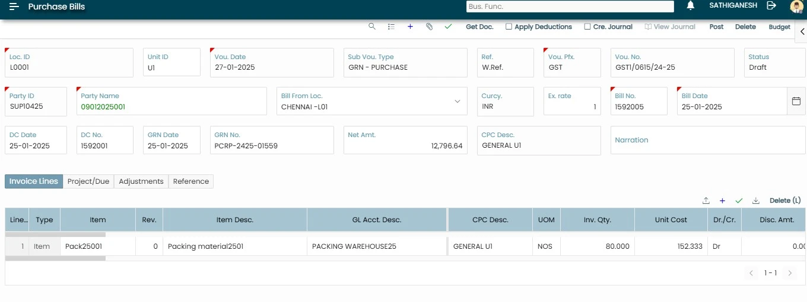
    <ul style="list-style-type: none; align-content: center">
      <li class="mouse-icon">Invoices can be registered in this screen.</li>
    </ul>
    <h2>Registering Invoice</h2>
    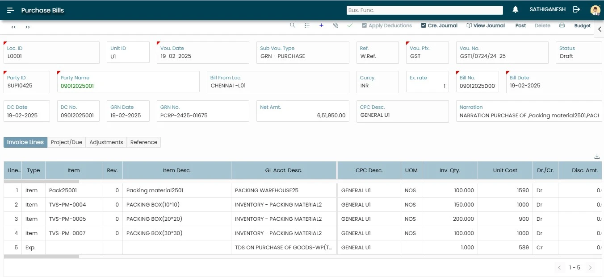
    <ul style="list-style-type: none; align-content: center">
      <li class="mouse-icon">Purchase Bills created from pending bills GRN will be displayed in this screen with the Matching GRN-Purchase.</li>
      <li class="mouse-icon">Get Doc. button is used to fetch a similar document lines from GRN-Purchase.</li>
      <li class="mouse-icon">Click on Create Journal button to create the journal for the entry., and the deductions will be updated automatically, based on the party and Item configuration.</li>
      <li class="mouse-icon">Click on create journal to view the journal/directly click post button, journal is created automatically and it will be posted.</li>
    </ul>
    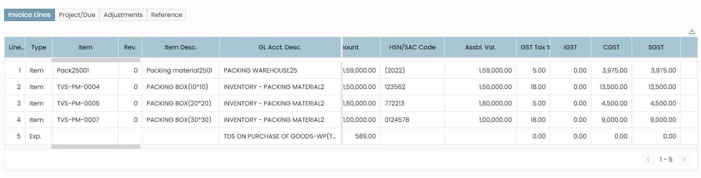
    <ul style="list-style-type: none; align-content: center">
      <li class="mouse-icon">According to the HSN code, the GST % will be fetched automatically.</li>
    </ul>
    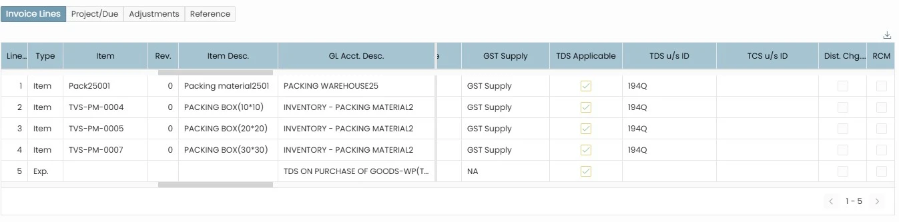
    <ul style="list-style-type: none; align-content: center">
      <li class="mouse-icon">If TDS Applicable checkbox is selected, then based on the TDS u/s the deduction will be applied.</li>
    </ul>
    <div class="wp-callout wp-callout-info">
      <div class="wp-callout-title">
        <i class="bi bi-lightbulb-fill" style="font-size: 18px; color: #ffd903"></i>
        Note
      </div>
      <p class="fs-6">The Invoice quantity and the Unit cost can be modified if needed.</p>
    </div>
    <h3 class="my-2">Invoice Quantity and Unit Cost Variance</h3>
    <p>We can able to change the Invoice Quantity and the Unit Cost in Supplier Documents.</p>
    <ul style="list-style-type: none; align-content: center">
      <li class="mouse-icon">Query the Record.</li>
      <li class="mouse-icon">Change the Quantity or Unit Cost.</li>
      <li class="mouse-icon">Save the changes.</li>
      <li class="mouse-icon">Separate Journals will be created as Invoice variance for the deviation quantity or unit cost.</li>
    </ul>
    <h2>Project Due</h2>
    <p>The due amount of the project can be viewed in this tab.</p>
    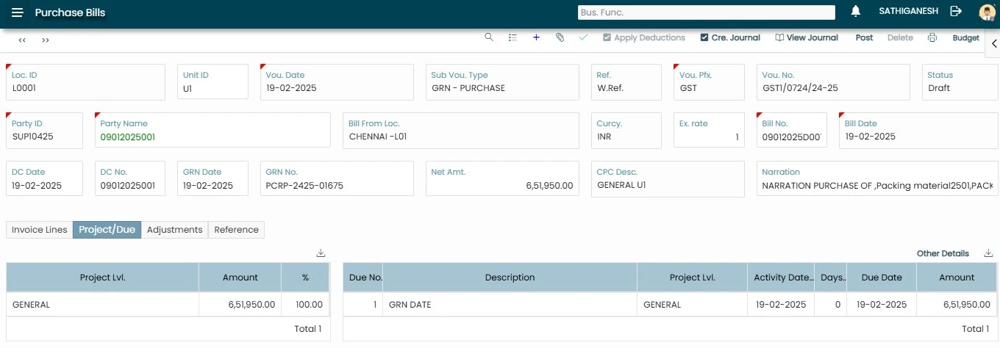
    <h2>Adjustment</h2>
    <p>If any advance has been paid, it can be adjusted in this screen.</p>
    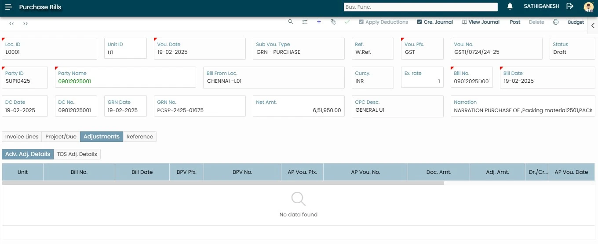
    <h2>Reference</h2>
    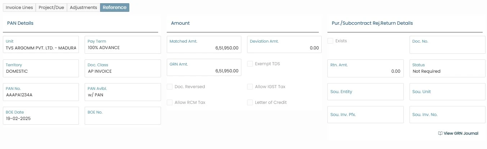
    <ul style="list-style-type: none; align-content: center">
      <li class="mouse-icon">If Exempt TDS check box is selected the TDS can be exempted for this document</li>
      <li class="mouse-icon">If Allow IGST Tax checkbox is selected, then IGST can be entered for Local purchase</li>
      <li class="mouse-icon">If Allow RCM Tax checkbox is selected, then RCM tax can be allow for Register Supplier</li>
      <li class="mouse-icon">
        Click on
        <i class="bi bi-chevron-left fs-5 mx-2" style="color: #000000; background-color: aliceblue; outline: 1px solid #111111"></i>
        to view the Bill amount details and address, if the Bill from Loc. is changed in header, it will be updated accordingly.
      </li>
    </ul>
    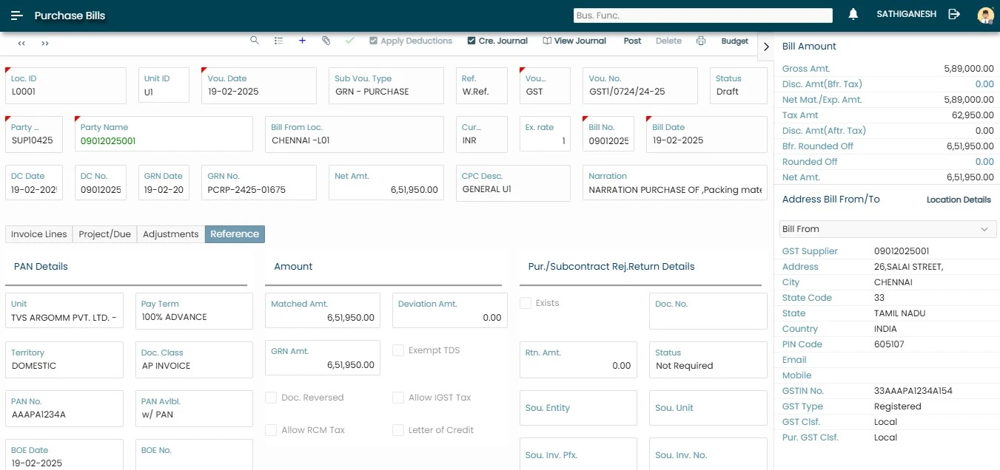
    <ul style="list-style-type: none; align-content: center">
      <li class="mouse-icon">The round off details can also be updated by clicking the rounded off amount.</li>
    </ul>
    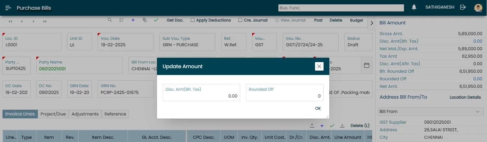
    <h3>Round off Variance</h3>
    <ul style="list-style-type: none; align-content: center">
      <li class="arrow-icon">The document amount can be rounded off, if needed.</li>
      <li class="arrow-icon">Based upon the amount mentioned in the application control the round off amount can be accepted.</li>
    </ul>
    <ul style="list-style-type: none; align-content: center">
      <li class="mouse-icon">View Journal button consists of two buttons such as (a) Detailed journal can be viewed from Vw.Jrnl (Det) button and (b) the summary of the journal can be viewed from Vw. Jrnl (Sum) button. If the same account is found present twice, in the Vw.Jrnl (Sum) button, the amounts gets added up and the account is displayed once.</li>
      <li class="mouse-icon">Click on Create Journal and the journal gets created.</li>
      <li class="mouse-icon">Press the post button to complete the entry and the document will be moved to the workflow document control.</li>
      <li class="mouse-icon">Delete button is used to delete the Record. Delete (L) button is used to delete the line records.</li>
      <li class="mouse-icon">Attachment button used to attach the files.</li>
    </ul>
    <h2>Journal Detail</h2>
    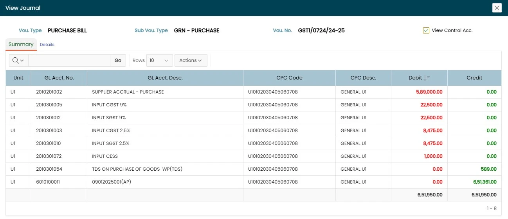
  </div>
</div>
